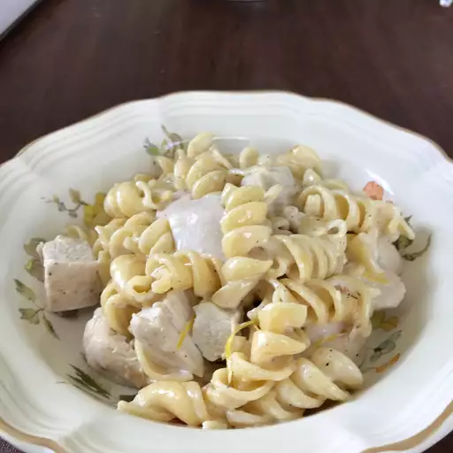

All Recipes
Lemon Cream Chicken Pasta

Description
This creamy pasta dish incorporates a classic combination of flavors:
lemon, chicken, and garlic. It's a nice change of pace from the usual pasta fare.
It's even quicker to make if you have leftover chicken.
Ingredients
- 3 skinless, boneless chicken breast halves
- 1 lemon, quartered
- 2 teaspoons garlic powder, divided
- 1 teaspoon ground black pepper, divided
- 2 (14.5 ounce) cans chicken broth
- ¼ cup fresh lemon juice
- 1 (8 ounce) package rotelle pasta
- 1 cup heavy cream
- 1 teaspoon grated lemon zest
Directions
- Step 1: Preheat the oven to 350 degrees F (175 degrees C).
Place chicken in a lightly greased baking dish. Squeeze lemon over both sides of
the chicken breasts and season both sides using 1 ½ teaspoons garlic powder and ¾
teaspoon pepper. Bake in the preheated oven until juices run clear and chicken is
no longer pink inside, about 40 minutes..
- Step 2: Meanwhile, in a large saucepan, season the chicken
broth with the remaining 1/2 teaspoon garlic powder and 1/4 teaspoon pepper.
Bring to a boil and add lemon juice and pasta. Cook over medium heat,
stirring occasionally, until all liquid is absorbed, about 25 minutes.
- Step 3: Cut cooked chicken into bite-sized pieces and stir
into cooked pasta, along with the cream and lemon zest. Cook, stirring, over
low heat for 5 minutes